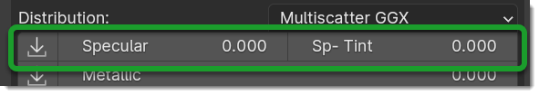
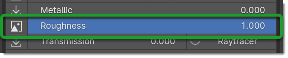
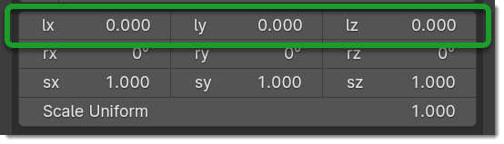
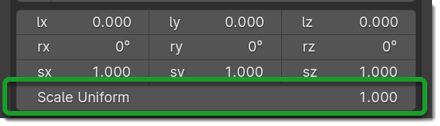
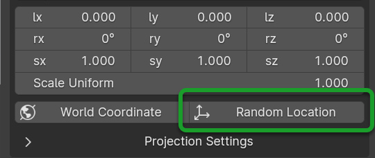
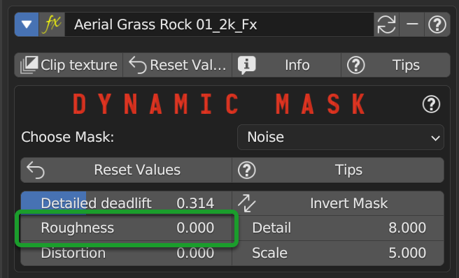
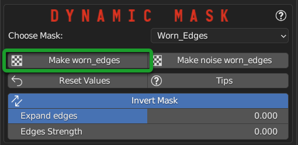
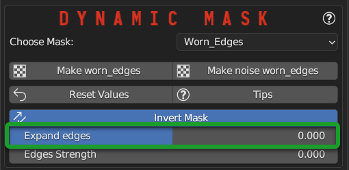
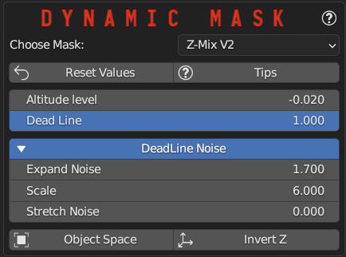

Material Editor
See also
Here you can find the section dedicated to video tutorials, it may be useful to you: Material Editor
The material editor is a very important panel, and it takes many different forms depending on the type of material applied Nexus / Simple PBR Explained here: Material Nexus type
Example Material Editor Nexus with 4 Modules for painting:
{kind=link}
From this panel you can also access painting and many other features!
Material Nexus type
If you are in Nexus mode, or have applied materials that support nexus modules, The panel looks like this:
This is the classic Nexus panel of Texture-based materials
{kind=link}
Here an example of the Blender node tree with an Extreme PBR Nexus material containing 2 modules and 2 Fx Layers (related to the modules)
{kind=link}
Don’t worry, everything is managed through the Extreme PBR panel as shown in the previous photo to this one!
Add Module
Tip
Only from Extreme PBR Nexus version 4.1.120
Press Shift before clicking the button in order to use it exactly as Shader Maker described here: Shader Maker in order to import your own textures and create your own material.
{kind=link}
With this button you can add up to a maximum of 4 modules, which will allow you to paint Texture Paint them on the object you are working on.
Note
In order to add a module, rely on the material_browser in fact you will add exactly what you have in the preview, or you can add via Shader Maker
Add Module will not work with Non Nexus type materials!
Module Material Panel
Show / Hide Group
This button allows you to hide or show all the properties of a group (Nexus Module), it is useful if you are using the FX Module, it makes the workspace cleaner and allows you to focus only on what you are doing.
Tip
From Extreme PBR Nexus version 4.1.120, you can use the following shortcuts:
Hold Shift while pressing this button, and all the modules on this row will be hidden or shown together with this module.
Hold Ctrl while pressing this button, and all the modules and Fxs will be hidden or shown together with this module.
{kind=link}
Search Module
Note
Useful only if there are 2 or more modules present in the material.
This button opens a search menu, which allows you to replace / move the modules present in the material. As soon as you select a module, the module from where you are starting will be replaced with the one you have chosen and vice versa.
{kind=link}
Module Name (Group Name)
From here you can view and also change the name of the group (Nexus Module) you are using.
{kind=link}
Replace Module
Tip
Only from Extreme PBR Nexus version 4.1.120
If you are replacing for example the Asphalt 001 1k Material with Asphalt 001 2k, Extreme PBR recognizes that the material is the same and only replaces the textures inside it, keeping the values of the Material Editor settings unchanged.
Press Shift before clicking the button in order to use it exactly as Shader Maker described here: Shader Maker in order to import your own textures and create your own material.
The Replace Module button allows you to replace the module you are using by loading another module, in accordance with the preview of the material_browser you have chosen.

Remove Module
This button appears only if there are 2 or more Nexus Modules, so it will allow you to remove the underlying module.
{kind=link}
Clip Texture

This button allows you to clip the texture, clip texture means that the texture will not be repeated, but will only be once, so, the object will have only one texture, without repetitions, no seamless.
Example of a texture clipped:
{kind=link}
Reset Values
The Reset Values Button allows you to reset the properties of the module you are using to the default values.

Info
The Info button allows you to view the information of the module you are using, for example the name of the author etc.
{kind=link}
Note
Not all modules necessarily have the info button, it depends on who created them, sometimes it is not present, but usually this information is in the Info & Tag menu
Tips
This button allows you to view or hide the hint next to each slider of the module you are using. so by pressing the hint buttons, you will see a window appear with a description of the parameter you are using.

Node Group Popover

Use Sockets
Note
Not all Nexus Modules will have these options available, all modules created as textures based materials will have these options available, procedural ones will not necessarily have them
Form this section you can activate and deactivate the sockets to save resources and space in the interface.
SUBSURFACE, TRANSMISSION, COAT, SHEEN, EMISSION
When you add a Texture type material in Nexus mode, these values are managed intelligently, based on which textures are in the material and some input values of the group node, so you won’t have to worry too much about this.
Example 1
All values are disabled, the links connected to the BSDF are limited to the basic ones necessary, the interface in Material Editor panel remains more compact as it will not show the inputs that refer to those values.
{kind=link}
Example 2
All values are enabled, all links that refer to the sockets are connected to the BSDF, the interface in Material Editor panel will be larger as it will show all the inputs that refer to those values.
{kind=link}
{kind=link}
Diffuse Color
This color box allows you to choose a color to apply to the diffuse texture, in case there is no texture, this takes the place of the texture as a solid color.
Note
This color works in accordance with the Colorize Strength

Color Lab Button
Color Lab Button gives you access to the popup panel for color management, you can find a detailed explanation here: Color Lab

Colorize Strength
This slider allows you to adjust the strength of the color you have chosen in the Diffuse Color box.
{kind=link}
This slider was created so that a value up to 0.5 will colorize the material, so the color will not replace the texture, but it will overlap it, while a value greater than 0.5 will replace the texture with the chosen color up to the value 1.0 which is the maximum colorization value, so it will be as if you had no texture, but only the chosen color, this always keeping the other maps like the specular, the normal etc.
Colorize Sample
By activating this button, 2 new sliders will appear, the first allows you to choose the color to be sampled, the second is the Tolerance which allows you to choose how much the sampled color must be similar to the original color to be replaced.
So in accordance with these settings, now the colorization will only color the parts that have the color similar to that.
{kind=link}
Emission
Note
In Cycles Render the Emission also acts as lighting, in Eevee no, in Eevee it is only a visual effect.
Tip
In order to activate the emission of a material that is not emissive by Default, make sure to activate the Emission button from the Node Group Popover menu and check “Emission”
{kind=link}
This slider is used to set the Emissivity of the material, there are some materials that have a dedicated emissivity map type Facade where the emissivity maps are on the windows, so if you adjust these sliders with that type of material, you will have your emission on the areas where there is the emissivity map, while if there is no emissivity map, then this slider will work as general emissivity of the material, the whole material will be emitting.
Transparent

Transparent slider is used to set the transparency of the material, if a transparency map is present, then this slider will only adjust certain areas of the material, while if it is not present, then it will adjust the general transparency of the material, the whole material in this case will be transparent according to the set value.
Note, in Eevee render and only in Eevee render transparency is handled differently, so you will have to use the button next to the slider (Transparent Mode button) to choose how to handle transparency, you can choose between these settings:
This material use a transparency map:

Transparent Mode
This button actually manages the Blend Mode and Shadow Mode of the material

Is BLEND blends every pixel between material and transparency, Is HASHED performs the blend in a noisy fashion (faster), Is CLIP sets as transparent only pixels under a threshold value (useful for texture controlled transparency).
Settings only for Eevee Render:
Is Opaque: Blend Mode: Opaque, Shadow Mode: Opaque
{kind=link}
Is Blend: Blend Mode: Alpha Blend, Shadow Mode: Alpha Ashed
{kind=link}
Is Hashed Blend Mode: Alpha Hashed, Shadow Mode: Alpha Hashed (The best, but requires more rendering samples to get a good result)
{kind=link}
Is Clip Blend Mode: Alpha Clip, Shadow Mode: Alpha Clip

Subsurface
Tip
In order to activate the Subsurface of a material that is not Subsurface by Default, make sure to activate the Subsurface button from the Node Group Popover menu and check “Subsurface”
{kind=link}
These values allow you to adjust the Subsurface Scattering of the material. Subsurface Scattering is the ability of a material to let light pass through it, but not transparently, but in a diffuse way, as if the light were diffused inside the material, this is very useful for materials like skin, leaves, ears, rubber, plastic, etc.
Subsurface Method:
Rendering method to simulate subsurface scattering.
{kind=link}
Note
EEVEE does not support the Random Walk methods.
Christensen-Burley
An approximation to physically-based volume scattering. This method is less accurate than Random Walk however, in some situations this method will resolve noise faster.
Random Walk (Fixed Radius)
Provides accurate results for thin and curved objects. Random Walk uses true volumetric scattering inside the mesh, which means that it works best for closed meshes. Overlapping faces and holes in the mesh can cause problems.
Random Walk
Behaves similarly to Random Walk (Fixed Radius) but modulates the Radius based on the Color, Anisotropy, and IOR. This method thereby attempts to retain greater surface detail and color than Random Walk (Fixed Radius).
Subsurface Radius:

Important
In order to work into Eevee Engine, you need to Activate the Translucency button on the right of the Subsurface button
{kind=link}
Subsurface Strength:
The strength of the subsurface scattering effect, questo valore da Blender 4.0 Controlla anche il valore “Scale” del nuovo Principle BSDF, qualsiasi valore Superiore a 0 Attiva il Subsurface Weight e i valori vanno da 0-10 Espressi in unità di misura del progetto.
{kind=link}
Sss IOR: (Cycles Only)
Index of refraction for Subsurface Scattering. (Available only in Random Walk (Skin) mode)
{kind=link}
Sss Anisotropy: (Cycles Only)
Controls the directionality of subsurface scattering. (Available only in Random Walk modes)
{kind=link}
Example of Subsurface Scattering with a light behind the object:
{kind=link}
Ambient Occlusion

This slider allows you to adjust the Ambient Occlusion of the material, if an Ambient Occlusion map is present.
This allows you to further simulate the ambient occlusion through its map. This is useful in Eevee, where the calculation of the ambient occlusion is quite approximate, this slider will give a touch of realism in addition to the material.
If you are in Cycles Render, in some cases it can be useful.
Metallic

This slider allows you to adjust the Metallic of the material, if a Metallic map is present, if it is not present then this slider will adjust the general metallic of the material, the whole material in this case will be metallic depending on the set value, a metallic value of 1.0 and a Roughness of 0.0, will render the material as a shiny metal, while a metallic value of 0.0 and a Roughness of 1.0 will render the material as a non-metallic material

Hint
On a completely black material, setting the Metallic will have no effect, as the black color does not reflect light, so no effect will be seen, to see the effect of the Metallic, it is necessary set a color other than black, even if it is a very dark color, in this way you will see the effect of the Metallic. In short, everything except total black üòä
Specular/Tint
{kind=link}
This 2 properties work in symbiosis:
Specular
This slider adjusts the specular of the material, if a specular map is present, then this slider will only adjust some areas of the material, while if it is not present, then it will adjust the general specular of the material.
Specular Tint
Mix between white and the base color in order to tint the specular highlights.
Example between Specular tint at 0.0 and 1.0, on the left 0.0, on the right 1.0

Roughness
{kind=link}
This slider allows you to adjust the Roughness of the material, if a Roughness map is present, then this slider will only adjust some areas of the material, while if it is not present, then it will adjust the general roughness of the material.
Example, on the left the roughness is at 0.0 on the right at 1.0:

Sheen / Sheen Tint
Tip
In order to activate the Sheen of a material that is not Sheen by Default, make sure to activate the Sheen button from the Node Group Popover menu and check “Sheen”

These 2 properties work in symbiosis:
Sheen
The sheen is a soft velvet-like reflection that appears in the areas where the light is reflected, value 0.0 means no sheen, while value 1.0 means maximum sheen.
Sheen Tint
Mix between white and the base color in order to tint the sheen. Value 0.0 means no tint, while value 1.0 means maximum tint.
Sheen Example: First image, Sheen 0.0 Sheen Tint 0.0, Second image Sheen 1.0 Sheen Tint 0.0, Third image Sheen 1.0 Sheen Tint 1.0

Sheen Roughness
This slider allows you to adjust the roughness of the sheen, the higher the value, the less the sheen will be visible, the lower the value, the more the sheen will be visible.
{kind=link}
Clearcoat / Roughness
{kind=link}
Coat
The clearcoat is a layer of varnish that is applied to the material, it is a layer that is applied on top of the material, this is similar to the clearcoat of a car.
Coat Roughness
In accordance with the clearcoat, this slider allows you to adjust the roughness of the clearcoat.
Coat Tint
This is similar to Specular Tint, but it is applied to the coat Specular Tint Is used to use the tint of the diffuse color on the coat.
Example, First Image Clearcoat 0.0, Second Image Clearcoat 1.0 and Roughness 0.0, Third Image Clearcoat 1.0 and Roughness 0.25

Coat IOR
Note
Only Available from Blender 4.0
{kind=link}
Transmission

The transmission is the ability of a material to let light pass through it, this is very useful for materials like glass, water etc.
This property works in symbiosis with the IOR and Transmission Roughness properties
The value of the transmission is a value between 0.0 and 1.0, where 0.0 means no transmission, while 1.0 means maximum transmission (To simulate a normal glass it will have 1.0 of transmission)
{kind=link}
IOR
The IOR is the index of refraction, it is a value that is used to calculate the refraction of the material. For example the IOR of the glass is 1.45, the IOR of the water is 1.33, the IOR of the diamond is 2.42 etc…
Note
Form Blender 4.0 the IOR also regulates the specular ior so the reflections will adapt to the value set here.
{kind=link}
Transmission Roughness (Deprecated into Blender 4.0)
This slider allows you to adjust the roughness of the transmission. The transmission Roughness will make the material more or less transparent, the higher the value, the less transparent the material will be, the lower the value, the more transparent the material will be.
Normal
{kind=link}
The normal map (Only if present) allows you to add details to the material this is very useful for simulating details like reliefs, scratches, etc … A value equal to 0.0 means no normal map.
Here is an example, on the left the value is 0.0, on the right the value is 1.0
{kind=link}
Bump / Distance
Important
Bump / Distance adjust the Microdisplacement in Cycles render in Microdisplacement Mode: Displacement Microdisplacement
{kind=link}
Note
In Blender at the moment the Bump map has a small resolution limitation, so if you zoom in very close to the object you will notice that the Bump map is a bit pixelated, this is a limitation of Blender at the moment.
These 2 properties work in symbiosis:
Bump
The bump map (Only if present) allows you to add details to the material this is very useful for simulating details like reliefs, scratches, etc … A value equal to 0.0 means no bump map.
Bump Distance
This slider allows you to adjust the distance of the bump map, the higher the value, the more the bump map will be visible, the lower the value, the less the bump map will be visible.
Here an example, on the left the value of the Bump is 0.0 (Consequently the distance has no effect, on the right the value of the Bump is 0.20 and the distance is 1.0
{kind=link}
Note
The Bump Map, unlike the normal map, is less detailed, as the map is in Black and White, but it creates an effect of greater relief than the normal map.
Locations XYZ
{kind=link}
These 3 sliders LX LY LZ allow you to adjust the location of the texture, this is useful if you want to move the position of the texture on the object.
Note
The Location Z property will only work if the mapping type is set to Box, Sphere or Tube To access these properties refer to this paragraph: Mapping Editor and here: Mapping Editor Button
Attention
If you are using the displacement Modifier, these sliders will not move the Displacement effect, to move the displacement effect together with the texture, you have to use the Mapping Editor described here: Mapping Editor and here: Mapping Editor Button because these sliders will not move the UV mapping. If you are using the Displacement Microdisplacement then these sliders will also work to move the displacement effect, but only in Cycles Render mode
Rotation XYZ
{kind=link}
These 3 sliders RX RY RZ allow you to adjust the rotation of the texture, this is useful if you want to rotate the position of the texture on the object.
Note
The Rotation Z property will only work if the mapping type is set to Box, Sphere or Tube To access these properties refer to this paragraph: Mapping Editor and here: Mapping Editor Button
Attention
If you are using the displacement Modifier, these sliders will not rotate the Displacement effect, to rotate the displacement effect together with the texture, you have to use the Mapping Editor described here: Mapping Editor and here: Mapping Editor Button because these sliders will not rotate the UV mapping. If you are using the Displacement Microdisplacement then these sliders will also work to rotate the displacement effect, but only in Cycles Render mode
Scale XYZ
{kind=link}
These 3 sliders SX SY SZ allow you to adjust the scale of the texture, this is useful if you want to scale the position of the texture on the object.
Note
The Scale Z property will only work if the mapping type is set to Box, Sphere or Tube To access these properties refer to this paragraph: Mapping Editor and here: Mapping Editor Button
Attention
If you are using the displacement Modifier, these sliders will not scale the Displacement effect, to scale the displacement effect together with the texture, you have to use the Mapping Editor described here: Mapping Editor and here: Mapping Editor Button because these sliders will not scale the UV mapping. If you are using the Displacement Microdisplacement then these sliders will also work to scale the displacement effect, but only in Cycles Render mode
Scale Uniform
{kind=link}
This slider allows you to scale the texture uniformly, this is useful if you want to scale the texture uniformly.
Attention
If you are using the displacement Modifier, this slider will not scale the Displacement effect, to scale the displacement effect together with the texture, you have to use the Mapping Editor described here: Mapping Editor and here: Mapping Editor Button because this slider will not scale the UV mapping. If you are using the Displacement Microdisplacement then this slider will also work to scale the displacement effect, but only in Cycles Render mode
World Coordinate
{kind=link}
The World Coordinate button, if active, allows you to use the coordinates of the world, otherwise it uses the coordinates of the object, if you move the object once the button is activated, you will see that the texture will move together with the object when you move the object. from its position.
Random Location
{kind=link}
The random location allows you to move the texture randomly, provided that the objects to which this is applied material in which the Random is activated, are separate objects, otherwise it will not work.
Here is an example of a scene with a fence with random location active, followed by an example with random location disabled:
{kind=link}
{kind=link}
Use Anti Tile
This checkbox will activate the anti-tile, the anti tile is useful on Materials such as Terrain and Vegetation, to avoid that the repetition of the texture is noticed.
Video Tutorial
Here you can find a video tutorial on how to use the Anti Tile: Anti Tile
{kind=link}
Note
The anti tile will only have effect on materials based on Texture Images, it will not have effect on procedural materials as the latter do not need anti tile.
{kind=link}
The access to the anti-tile panel is possible only if the Use Anti Tile checkbox is active, otherwise the panel will not be visible.
{kind=link}
- Blend Scale
Adjusts the scale of the blend between tiles, the higher the value the finer the noise will be, the lower the value the larger the noise will be.
- Edge Wobble
Adjusts the amount of wobble on the edges, the higher the value the more wobble will be present, the lower the value the more wobble will be absent. This makes it possible to make the edge between the tiles less linear.
- Edge Blend
Adjusts the amount of blend on the edges, the higher the value the more blend will be present, the lower the value the more blend will be absent. This makes it possible to make the edge between the tiles less linear.
- Seed
By changing the value, the seed will be changed, so you will change the randomness of the pattern.
- Expand Seam
This value is used to expand (enlarge) the randomly generated tiles, useful for further adjusting the pattern, in case that the texture is not seamless.
- Hue Min
This minimum value to which the color can be moved, if the value is 0.5, the color will not change.
- Hue Max
This maximum value to which the color can be moved, if the value is 0.5, the color will not change.
- Exposure Min
This minimum value to which the exposure can be moved, if the value is 0.0 the exposure is neutral.
- Exposure Max
This maximum value to which the exposure can be moved, if the value is 0.0 the exposure is neutral.
- Color Var Scale
This adjusts the size of the size of the patches based on the HUE and EXPOSURE adjustment. A high value corresponds to a larger size. If 0 The value coincides with the random tiling generated by the anti-tile.
- Is Voronoi - Is Noise
This button allows you to change the algorithm that controls only HUE and EXPOSURE.
- Random Rotation
This button (Which is always active by default) allows you to randomly rotate the tiles if active, if instead is disabled, the original texture will not be randomly rotated.
- Hide Anti Tile
If active, it hides the anti-tile effect without deactivating it, this is useful for seeing the original texture without anti-tile effect vs the texture with anti-tile effect.
Projection Settings
This Menu is present in all Nexus and Non Nexus Type materials, and is used to set the Coordinates, Projection and Normal Space Map
{kind=link}
Coordinate
The coordinates (If present in the menu) refer to the Coordinate node preset in the modules or materials of Extreme PBR, even materials created with the Shader Maker have this menu.

The Coordinate property is based on the outputs sockets present on the node tagged as COORDINATE in the Extreme PBR system this allows based on the sockets present in the output node to show in the list all the possible sockets to link to the next node, here is the example of the Coordinate node:
{kind=link}
Projection
The Projection property (If present) allows you to set on all Texture Image nodes present in the material and to change their Projection property in one go
{kind=link}
As explained above, this property sets the projection type on all nodes (Only those tagged by Extreme PBR) so if you are mixing more modules, each module will have its own type of projection. Here is the example in the node:
{kind=link}
Bellow the corresponding example of a Flat, Box, Sphere and Tube (Cylinder) mapping.
(Into image UV as Flat)
{kind=link}
Box Blend
In this mode, the addon sets the nodes with image textures (if present) in Box mode. In addition, the Blend slider allows you to control the corresponding Blend values of the image texture nodes.
Here the Material nodes in Box Mode:
{kind=link}
Normal Map Space
Tangent, Object and World space. Tangent space normal maps are the most common, as they support object transformation and mesh deformations. Object space normal maps keep sticking to the surface under object transformations, while World normal maps do not.
This property is exactly the one exposed in the Blender Normal Map node, this makes it accessible directly from the Extreme PBR panel, without having to open the material node tree:
{kind=link}
Convert Module System
Convert the modular system of Extreme PBR between Blender versions to maintain system compatibility.
(From Extreme PBR version 4.1.110 Only)
This button will be displayed if the Extreme PBR material was created inside a version of Blender prior to 4.0 or vice versa, if it was created in a version 4.0 and you are opening in Blender 3.6.
{kind=link}
This appears because the Principled BSDF nodes of Blender, sometimes they are Modernized and improved as in the case of the passage from Blender 3.6 to Blender 4.0 where the Principled BSDF node has different inputs, with different names and slightly different functions.
In addition in Blender 4.0 with Extreme PBR 4.1.110 or higher, the Module node is connected directly to the Principled BSDF node without going through the Extreme PBR Mixer, this to improve performance and compatibility with Blender 4.0
Here is an example on the left of a Material created in blender 3.6 and on the right the material converted in Blender 4.0
{kind=link}
Add Fx Layer
{kind=link}
Tip
Only from Extreme PBR Nexus version 4.1.120
Press Shift before clicking the button in order to use it exactly as Shader Maker described here: Shader Maker in order to import your own textures and create your own material.
This Button, in accordance with the material preview present in the material_browser allows you to add an effect to the material. This is explained well in this chapter: Fx Layer
By adding an Fx Layer, the addon takes the selected material and analyzes it to understand which map to use as a Mask, so the selection order is this:
mask
imperfections
roughness
specular
occlusion
displace
metal
diffuse
alpha
So, in order, the addon as soon as it finds a map of those listed above, uses it as a mask to decide where to apply the effect, and where not, in fact the first maps are all in black and white, white indicates where to apply the effect, black where not to apply it, using the shades of these maps, we get an Fx Layer. You can also disable the mask map at a later time.
Adjust Node Tree
{kind=link}
Adjust Node Tree button, if the nodes of Extreme PBR Nexus have been disconnected (For example due to an error, or an involuntary manipulation) allows you to reconnect all Nexus nodes, and realigns them so that they have a correct order.
Here is an extreme example, before and after:
{kind=link}
{kind=link}
Fx Layer
Note
In order to add the Fx Layer you will have to use the Add Fx button described here: Add Fx Layer
The Fx Layer allows you to add Above the material (Module) you are using, an effect, such as a Fingerprints effect or a Dust effect or a Scratches effect etc …
To add an Fx Layers, make sure you have applied the material with the Nexus option, as the materials applied with the Simple PBR mode do not support Fx Layers.
An example, wood material, without Fx Layer
{kind=link}
An example, wood material, with Fx Layer Colored
{kind=link}
An example, wood material, with Fx Layer Normal and Roughness
{kind=link}
Note
All Texture-based materials can become Fx Layers, the Fx Layer in fact uses the maps present in any material of the Extreme PBR library, so you have a wide choice. For example you can also apply an FX layer of another wood to the material, this will use the maps of the other wood in addition to the underlying material
Fx Layer Panel
Here is how an Fx Layer panel looks inside the material editor, in fact, once added, it will be underneath the corresponding material panel (Nexus Module), you can also add 2 Fx Layers if you want, but it is not recommended to exaggerate with the Fx Layers, as they could slow down the rendering, in addition at the moment, Blender supports a maximum of 24 Textures per material, so using the Fx Layers, you could exceed this limit, and make it become the material unusable in Blender.
{kind=link}
Fx Layer same tools
Most references are the same as the material panel, so I won’t repeat them, but I leave the reference to the material panel because they have the same functions:
Left: Fx Layer, Right: Module
{kind=link}
Show / Hide Group: Show / Hide Group
Search Module/Fx: Search Module
Module/Fx Name: Module Name (Group Name)
Replace Module/Fx: Replace Module
Remove Fx Layer
In addition to removing the Fx Layer, just press the Remove Fx Layer button here:
{kind=link}
Clip Texture: Clip Texture
Dynamic Mask
{kind=link}
By this area you can manage the Fx Layer in 5 modes:
Choose Mask Selector
{kind=link}
Dynamic Mask Paint Mode
This is the default setting once you apply an Fx Layer, in this mode you can paint where you want the Fx Layer to be visible on the material.
Important
If you intend to use the same material with the same Fx Layer on multiple objects with different shapes, you will have to make the material unique, because the painting mask will not work on objects with different shapes.
Paint Tools
{kind=link}
Paint Tools Button gives you access to the Paint Tools popup panel explained in this chapter: Paint Tools
Paint Un-Paint
{kind=link}
These 2 buttons are used to paint or delete the mask, the first paints, the second deletes.
Note
Once you press one of these 2 buttons, the mouse cursor will become a brush, and you can paint, so you will have entered Paint Mode. To exit Paint Mode just press again the button that was pressed to enter Paint Mode, in fact it will become a Stop
{kind=link}
Example with a corner of FX painted:
{kind=link}
Fill Un-Fill

These 2 buttons are used to fill or delete the mask, so if you press Fill, the whole object where the material is applied of the Fx Layer will be filled with a mask, while if you press Un-Fill, the whole mask will be deleted and you will see only the material underlying.
Dynamic Mask Noise
{kind=link}
In this mode, the mask will be controlled by a Noise node. This setting is very useful for making the grass or terrain less uniform, as the Noise node generates a noise that can be used to mask the repetitions of the texture, so as to make the material more natural.
Here is an example of Dynamic Mask Noise:
{kind=link}
The Base material is Grass, while the Fx material is another type of Grass. So this Noise effect decides where show the Fx layer and where not, based on the mask generated by the Noise.
Detailed Deadlift
Detailed Deadlift manage how much the noise effect should be sharp or not, the higher the value, the sharper the noise effect will be, consequently the Fx Layer will be sharper, while the lower the value, the less sharp the noise effect will be, consequently the Fx Layer will be more blurred.
Here is the example of a Deadlift set to 0.883, so quite strength:
{kind=link}
Invert Mask
By pressing the Invert Mask button, you will invert the colors of the noise mask, so where there was black before, now there will be white and vice versa. consequently the noise effect will be inverted.
Here is the example of a Invert Mask:
{kind=link}
Roughness
{kind=link}
Roughness Sliders is used to adjust the roughness of the noise, the higher the value, the roughness the noise will be, so it will be more rich in details the detachment between the base material and the Fx material.
Note
This value if set high, increases the rendering time.
Detail
{kind=link}
Detail Sliders is used to adjust the detail of the noise, the higher the value, the more detailed the noise will be, so it will be more rich in details the detachment between the base material and the Fx material.
Note
This value if set high, increases the rendering time.
Distortion
{kind=link}
Distortion Sliders is used to adjust the distortion of the noise.
Here an example of Distortion set to 4.0:
{kind=link}
Scale
{kind=link}
Scale Sliders is used to adjust the scale of the noise.
Dynamic Mask Worn Edges
{kind=link}
Note
This tool is specially designed to work even in Eevee that does not yet have support for the detector of edges, so this tool is very useful for Eevee, and it also works in Cycles.
Here is an example of Dynamic Mask Worn Edges:

The stressed edges are Pre-Bake, and work as a mask, so this mask will be cooked on the sharpest corners of the object.
Make Worn Edges
{kind=link}
By pressing this button, the mask will be baked on the sharpest corners of the object. This type of Bake is with denoising, so it is much more homogeneous and without noise.
Make Noise Worn Edges
{kind=link}
By pressing this button, the mask will be baked on the sharpest corners of the object, but with a noise effect. This type of Bake is with noise, so it is much more noisy.
Worn Edge Reset Value
{kind=link}
This button resets the value of the sliders to the default value into the Worn Edges panel.
Worn Edge Invert Mask
{kind=link}
This button inverts the mask, so where there was black before, now there will be white and vice versa.
Worn Edge Expand Edges
{kind=link}
This slider allows you to expand the mask around the corners, so you can make the mask more or less large.
Here an example of the expansion of the edges Mask:
{kind=link}
Edges Strength
{kind=link}
Edges Strength adjust the strength of the mask, the higher the value, the stronger the mask will be, the lower the value, the weaker the mask will be. So it can be said that a low value of the mask, will make the mask more blurred, while a high value will make the mask stronger.
Here an example between a low value and a high value of the Edges Strength:
{kind=link}
Dynamic Mask Z-Mix V2
{kind=link}
Z-Mix V2 allows you to mix the Fx Layer vertically, useful for simulating the effect of a material that has been consumed vertically, or to simulate grass or “Climbing” vegetation or moss.
Here some examples of Z-Mix V2:
{kind=link}
{kind=link}
{kind=link}
Z-Mix V2 Reset Value
{kind=link}
This button resets the value of the sliders to the default value into the Z-Mix V2 panel.
Z-Mix V2 Altitude Level
{kind=link}
This slider adjusts the height of the Z-Mix V2 level.
Example of 2 different Altitude Level:
{kind=link}
Z-Mix V2 Dead Line
{kind=link}
By adjusting this slider you can adjust the Dead Line, i.e. the line of separation between the base material and the Fx material. A higher value will make the Dead Line sharper, while a lower value will make the Dead Line more blurred.
Example, on the left a dead line with value 0.0, on the right a dead line with a higher value
{kind=link}
Z-Mix V2 Deadline Noise
{kind=link}
Note
If activated, it will give access to other properties described later
Once activated, it will make the deadline between one material and another, more noisy, so more natural.
Here an example of a Deadline without Noise, and with Noise:

Z-Mix V2 Expand Noise
{kind=link}
Expand Noise allows you to expand the Noise, so to make it more stretched.
Here an example of Expand Noise, on the left a noise without Expand Noise, on the right a noise with Expand Noise of higher value
{kind=link}
Z-Mix V2 Scale
{kind=link}
Scale allows you to adjust the scale of the Noise.
Here an example of Scale, on the left a noise with small scale, on the right a noise most large scale
{kind=link}
Z-Mix V2 Stretch Noise
{kind=link}
Stretch Noise allows you to stretch the Noise, so to make it more stretched or less stretched.
Here an example of Stretch Noise, on the left a noise with No Stretch Noise, on the right a value of Stretch Noise of 1.0
{kind=link}
Z-Mix V2 Object Space
{kind=link}
Object Space Toggle button, if set to Object Space, the Z-Mix is in object space, so if you move the object, the Z-Mix will always be in the same position (This is the default) if instead you press the button, you will switch to Global Space, so the height of the Z-Mix will depend on the position of the object in global space.
This is useful if for example you have more objects with Lo Z-Mix, and you want for example, the vegetation, or the erosion is always at the same height on all objects.
Here is an example of setting Z-Mix in Global Space on multiple objects:
{kind=link}
Z-Mix Invert Z
{kind=link}
Invert Z Toggle button, if set to Invert Z, the Z-Mix will be inverted.
Here 2 images, te first with Invert Z disabled, the second with Invert Z enabled:
{kind=link}
Mask map
{kind=link}
This button is the Texture Manager described here: Texture Manager Panel and in this case the texture of the mask will be selected automatically from the material that is being applied as Fx Layer, as explained here
Exclude Mask
{kind=link}
Exclude Mask Button, excludes the mask completely, so the Fx layer will be homogeneous over the entire surface of the object where the material containing the Fx Layer is present.
Invert Fx
{kind=link}
Invert Fx Button inverts the Fx Layer Mask, so where there was black before, now there will be white and vice versa.
Note
This button will not be visible if you activate the Exclude Mask button described in the previous paragraph.
From Min From Max
{kind=link}
Normally this is used to adjust the shading between the base material and the Fx material, so as to have a desired shading.
Show Diffuse
{kind=link}
Questo valore serve se vuoi mostrare il colore del materiale base, in modo da poterlo vedere oppure no. Se non vuoi vederlo, impostalo su 0.0, quindi il colore sarà gestito dal Base color.
Fx Layer Properties
{kind=link}
For all the properties that are highlighted, you already have a complete description of them in the paragraph Module Material Panel all the properties, in fact, are the same, so I will not repeat them, but I refer you to the paragraph Module Material Panel Module Material Panel
Material Editor (Simple PBR)
This is the Material Editor panel when you apply a material with the Simple PBR method, to choose to apply the material with the Simple PBR method you have to set the material application method to Simple PBR here described: Material Type
This panel will be the same even for materials not coming from Extreme PBR, the same interface has been chosen that adopts blender.
Note
As for the microdisplacement it will be manageable from this panel in this mode the interface will appear of the Displace node, if in fact a displacement of type “Microdisplacement” has been applied.
{kind=link}
This panel will be drawn on the Simple PBR node standard of Extreme PBR. The Simple PBR node tree is this:
{kind=link}
Important
The Simple PBR version is a simplified version of the Nexus version, so it does not have all the properties that the Nexus version has, but only the essentials to be able to create and manage the material. This type of material (Simple PBR) is much faster to manage, and much faster to render. So if you need speed, and you don’t need all the properties that the Nexus version has, especially for as regards painting, then I recommend using the Simple PBR version.
Convert to Nexus
This button when present, allows you to try to convert the material into a Nexus type material, this is useful if you want to paint or add an Extreme PBR material on top of this material, since the Nexus type materials have been studied on purpose.
Note
This converter only works if the contextual material is of type Simple PBR or any material as long as it contains the textures with standard nomenclature, see here the standard nomenclature: Texture Nomenclature
{kind=link}
Unrecognized Material
In this case the material is pink, this means that probably the textures to which the material referred have been moved or deleted, so the situation, selecting the object with the active material, will be this:
All missing textures will be marked in Red, this allows you to enter the Texture Manager panel and try to search for missing textures, using the Find Lost Images button that will in turn open a File Browser where you will have to enter the path of where you think the Images are (In the best case if you have not deleted such files)
{kind=link}
Important
If you are working on a project and want to share your project with other people, or simply, you are thinking once finished deleting your texture images on disk, stop and make sure to Pack everything in the project otherwise this situation will arise once the texture images have been deleted from the disk.
Take a look here to understand how to do it: Why if I export the project to another computer I can no longer see the materials?